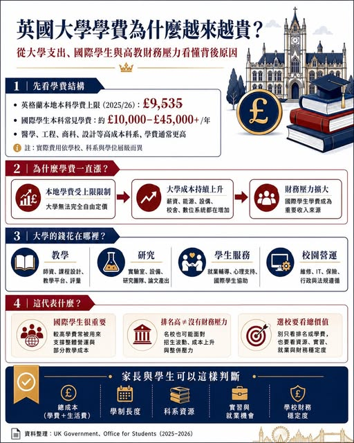

《看懂制度，選對世界》第一集
英國大學學費為什麼越來越貴？
從大學支出、國際學生與高教財務壓力談起 表面上看，這像是大學單方面調漲費用；但從英國高等教育財務結構來看，問題其實更複雜。英國大學正在面對三股壓力：本地學生學費上限長期偏低、教學與研究成本上升、國際學生招生波動加大。

【英國大學學費為什麼越來越貴？】 從大學支出、國際學生與高教財務壓力談起 表面上看，這像是大學單方面調漲費用；但從英國高等教育財務結構來看，問題其實更複雜。英國大學正在面對三股壓力：本地學生學費上限長期偏低、教學與研究成本上升、國際學生招生波動加大。這三件事交疊在一起，形成今天英國大學「一邊漲學費，一邊仍喊財務吃緊」的現象。１、英國本地學生學費其實長期被限制 英國大學並非所有學生都付一樣的學費。以英格蘭為例，本地大學生學費長期受到政府上限管制。
英國政府已公布，2025/26 學年本地全日制本科學費上限調整至 £9,535；而 2026/27 之後，學費上限將進一步按照通膨機制調整，但仍受到政府與監管制度限制。這代表一件事： 英國本地學生的學費收入，並非由大學完全自由定價。可是大學的支出並未被凍結。教職員薪資、校園維護、實驗室設備、能源費用、數位系統、學生支援服務，都隨著通膨與法規要求增加。當本地學費收入追不上支出，學校自然需要從其他地方補足。２、國際學生學費成為大學財務的重要來源 國際學生學費通常高於英國本地學生，而且多數科系由大學自行訂價。
一般本科課程國際學生學費常見從約 £10,000 起跳，部分課程可接近 £45,000；醫學類課程甚至可能更高。英國國會與高教財務討論中，多次提到國際學生學費具有「交叉補貼」功能，也就是國際學生較高的學費收入，部分支撐了本地學生教學成本、研究活動與校園營運。換句話說，國際學生付的學費，買到的並非單純是一間教室、一位老師與一張文憑；它也參與支撐整個大學系統的運作。這對台灣家長來說很重要。選英國大學時，除了看排名，也要看該校財務是否健康、國際學生比例是否過度集中、熱門科系是否仍有足夠師資與資源。
３、大學支出增加，來自教學、研究與學生服務三大區塊 英國大學主要支出包含：
１、教學成本
２、研究成本 英國名校重視研究排名、論文產出、實驗設備、博士培養與研究團隊。許多研究經費並非完全由政府或企業補足，大學常需要自籌部分資源。３、學生服務成本 包含就業輔導、心理健康支援、國際學生服務、簽證支援、住宿協調、學習支援、身心障礙資源。４、校園與行政成本 包含校舍維修、能源、保險、IT 系統、資安、合規、資料管理與國際招生團隊。
英國國會圖書館資料指出，英格蘭高教公共資金包含學費貸款、Office for Students 教學補助與 Research England 研究資金；其中 OfS 在 2024/25 年度約分配 £1.4 billion 教學補助，主要支援那些成本高於學費可負擔範圍的課程。這說明了一件事： 工程、醫學、實驗科學、藝術設計等高成本課程，光靠一般學費常常很難完全支撐。４、為什麼有些大學排名高，仍然會財務吃緊？大學財務並非只看收入，也要看成本結構與招生風險。
Office for Students 在 2025 年財務永續報告中提醒，英格蘭高教機構雖然整體仍在運作，但招生、成本、現金流與國際學生市場波動，已讓許多學校面臨壓力。2026 年更出現一些具代表性的現象。例如 King’s College London 與 Cranfield University 宣布合併計畫，外界普遍將其放在英國高教財務壓力與研究競爭力重整的脈絡下解讀。另外，University of Nottingham 近期也傳出大規模人事調整與裁員風險，理由之一正是國際學生人數下降與財務壓力增加。
這提醒我們： 英國大學的品牌與財務健康，並非永遠一致。排名高的學校，也可能因為校園擴張、研究支出、國際學生減少、政府政策變動而面對壓力。５、政府政策也讓大學更難規劃 Universities UK 分析指出，政府政策變動可能導致英格蘭高教機構在 2024/25 至 2029/30 年間面臨約 £3.7 billion 的資金減少。另一方面，英國政府也曾提出針對國際學生學費收入課徵 levy 的構想。
相關影響分析提到，OfS 估算 2026/27 年英國本科學費調升，可能為高教部門帶來約 £440 million 額外收入；但若同時增加國際學生 levy，部分收入效果可能被抵銷。對大學來說，這形成兩難： 學費需要上調，才能補足成本； 但學費越高，國際學生與家長就越會比較加拿大、澳洲、美國、歐洲與亞洲其他選項。６、對國際學生來說，英國學費會繼續上升嗎？大方向來看，會。原因很簡單： 英國本地學生學費受到限制，而大學成本仍在增加；因此國際學生學費仍會是大學調整收入的重要來源。但學費上升也有上限。
若英國大學漲太多，學生可能轉往其他國家。尤其加拿大、澳洲、歐洲英語授課課程、亞洲國際學程都在競爭同一批學生。英國大學必須在「維持收入」與「保持吸引力」之間取得平衡。因此未來幾年可能會看到三種趨勢： 第一，熱門科系與高成本科系繼續漲價。例如商科、工程、醫學相關、AI、資料科學、設計、建築等。第二，部分大學提供更多獎學金與 early payment discount。表面學費高，但實際錄取後可能透過獎學金調整學生負擔。第三，大學更重視國際招生結構。過去某些學校高度依賴特定國家學生，未來會更分散市場，以降低招生風險。
７、家長真正要看的，不只是一年學費 如果只看學費，容易誤判英國留學成本。更完整的評估應包含： 學費 不同科系差距很大，商科、工程、醫學、藝術設計通常較高。生活費 倫敦與非倫敦城市差距明顯。倫敦學費與住宿成本通常都較高。學制長度 英國本科多為三年，碩士多為一年。即使單年學費高，整體時間成本可能低於四年制國家。實習與就業機會 若課程有 placement year、industry project、professional accreditation，學費雖高，但職涯價值可能更高。
學校財務與資源配置 要觀察該校是否持續投資學生服務、就業中心、實驗設備與國際學生支援。８、Peter觀點：英國大學學費問題，本質是高教財務重分配 英國大學學費上升，是全球高等教育財務壓力的一部分。大學要維持研究排名、教學品質與國際競爭力，就需要龐大支出；但本地學費受到政府限制，公共補助也有限，國際學生自然成為重要收入來源。英國留學仍然有價值，但選校邏輯要比過去更細。高學費時代，真正重要的是把錢花在有長期回報的選擇上。
第二部 美國：招生趨勢與申請策略
制度是地圖，選擇才是方向。